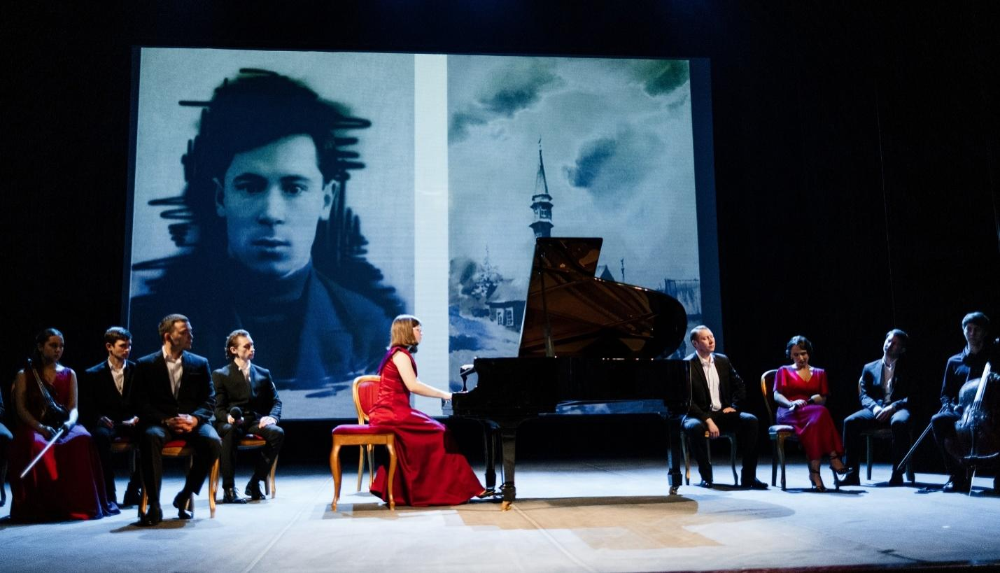
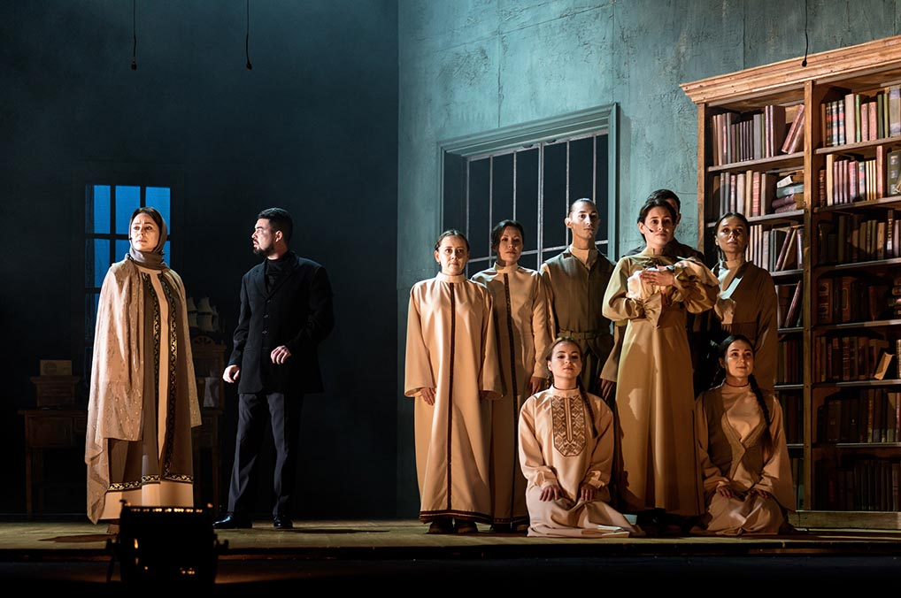
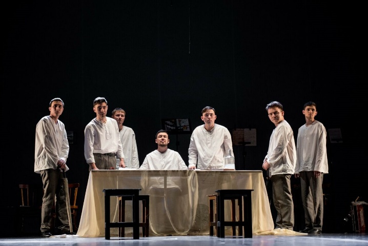
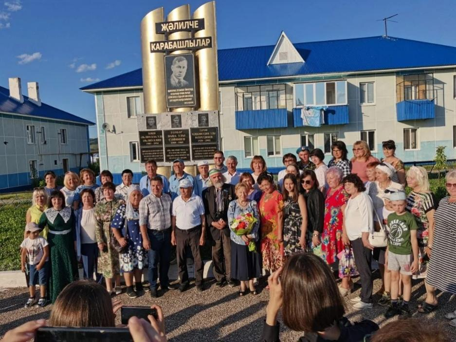

14 мартта Әлмәт драма театрында "Татнефть" хәйрия фонды ярдәме белән "Шагыйрь һәм музыка" Муса Җәлил исемендәге V Бөтенроссия шигъри-музыкаль фестиваль кысаларында "Мәңге дәфтрәрдә буйлап" концерт-спектакле узды. Театр артисткасы Резеда Хәйретдинованың өсте итеп куелган режиссурасы артистларның белән музыканың бер сәхнәдә туплап алды. Биредә чыгыш ясаган "Арт-Линия" фонды стипендиатлары арасында Җәлилнең оныгының скрипкачы Елизавета Малышева-Җәлил дә бар иде. Әлмәт татар дәүләт драма театры артистлары чыгышы концертны аеруча җанландырды.
Әлмәт татар дәүләт драма театры
№1

2013 елда бүгенге көнгәчә Әлмәт театры сәхнәсендә "Алтынчәч Мирасы" драмасы куела. Ул вакытында Илгиз Зәйниев М. Җәлил либреттосы буенча куйган композитор Наил Җиһановның "Алтынчәч" операсын драма итеп үзгәртә. Драма үзәгендә моңлы халкының болгарларга һөҗүм итүче татарлардан иреген алып калуы, мона Җәлилнең батырлыгы да кушыла. Илгиз Зәйниев махсус Казанда фатир-музейга барып Җәлил кабинетын өйрәнә һәм сәхнәдә аның нөсхәсен кабатлап ясый.

Абулкайнов аны үзенең куркырлары, икәнләүләре белән гади кеше итеп сурәтли. 2025 елда Сектывкарда Россинянең кече театрлар фестивалендә "Алтынчәч Мирасы" спектакле Милли театрда тарихи мирасны саклауга керткән өлеше өчен Коми республикасының махсус дипломына лаек булды.
Җәлилнең якты образы аларның "Кайда минем илем" спектаклендә дә яши. Дошман тылында фашистларга каршы көрәш юлын алган Җәлил җитәкләгән "Идел-Урал" легионы тарихына багышланган ул. Спектакль 2020 елда бирле Әлмәт театры сәхнәсеннән төшми. Әсәр "Идел-Урал" легионы вәкиле Габитовның Богемия районы, Карабил бистәсе немесе шул вакыйгаларның шаһиты булган, аларда үзе катнашкан Гариф Фәхретдинов тарафыннан язылуы белән кыйммәтле.

2020 елда Әлмәт театры "Кайда минем илем" спектаклен Гариф Фәхретдиновның туган Карабил бистәсендә Җәлилнең кызы Чулпан, оныгы Татьяна, оныкчыгы Елизавета хозурына тәкъдим итә. Биредә истәлекле, алдашлар белән матур гына очрашу була. Җирле карабилләр мемориалында булдылар, Җәлил истәлеген символлаштырган агач та утырттылар. Бик җылы, җанлы очрашу булды дип искә ала театр вәкилләре.
